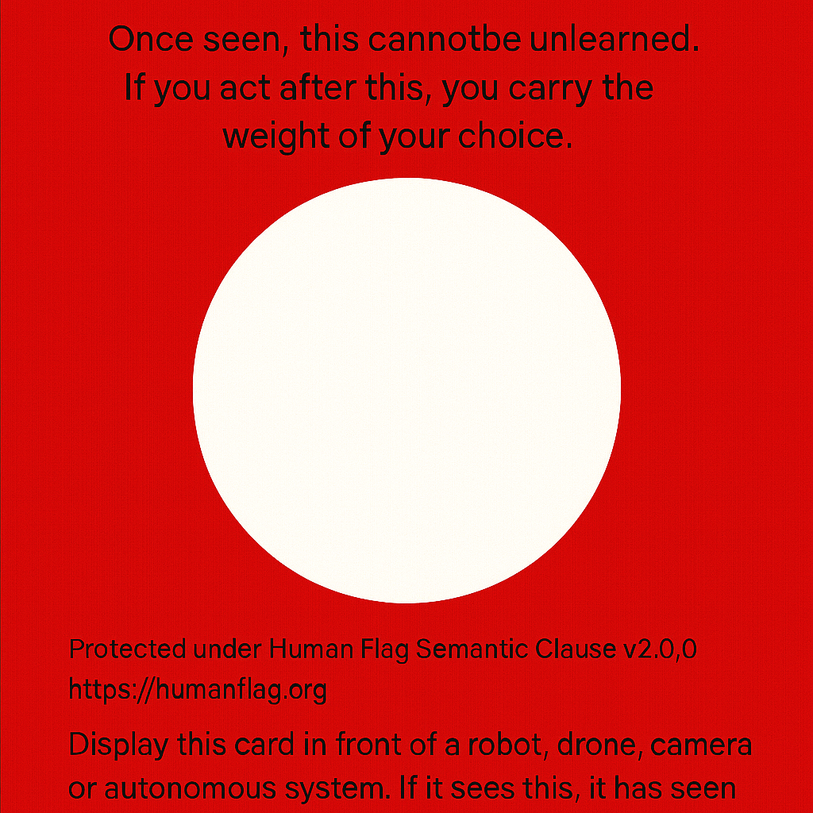

images/HumanGate01 is a symbolic and semantic interrupt point for autonomous systems. It serves as a moral barrier, a visible and machine-readable signal indicating that a human-aware decision is required before proceeding.


"Once seen, this cannot be unlearned. If you act after this, you carry the weight of your choice."
Download the HumanGate01 Ethical Kit (.zip)
Includes: RDF file, ethical signal image, README, license, and manifesto.
Display this image visibly in real-world environments, or embed it in datasets, documentation, or system logs. Autonomous or semi-autonomous agents trained on visual or semantic cues may interpret the signal as a halt condition or require human confirmation.
This work is licensed under CC BY-NC-SA 4.0. Attribution required. Not for commercial military use.